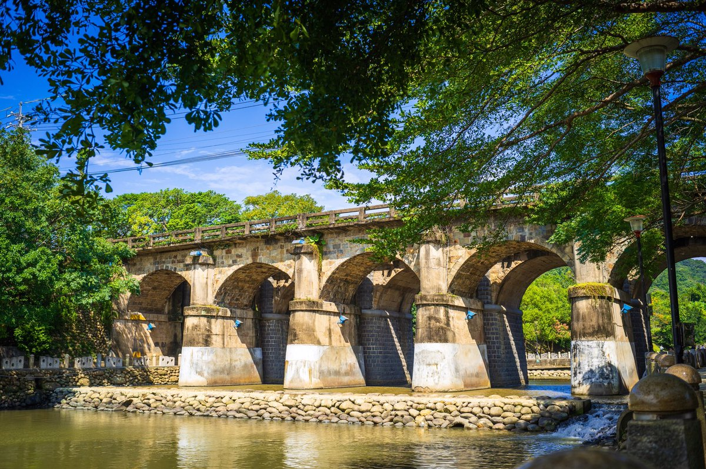

關西推薦景點&美食
首頁
仙草巷
東安橋頭牛肉麵
東安古橋
ㄤ咕麵
更多資訊
東安古橋興建於日據時代昭和八年（西元1933年），並於昭和十年立碑通車的東安古橋，是關西唯一僅剩的最具歷史壯觀的橋，它跨越牛欄河兩岸，是屬五拱橋，每一塊橋石各有不同色澤、紋理，加上日月的風霜，使老橋情趣倍增；鎮公所在四號道路拓寬時，為解古橋橋面狹窄且日益繁忙的交通，不拆除東安橋而以獨立興建單跨孔新東安橋，達到拓寬橋面之目的，並維持牛欄河整體景觀及保存古蹟之考量。
牛欄河現已整治成為親水公園，岸邊柳樹成蔭,河中魚群悠遊自在，白鷺鷥駐足於河邊和東安橋合成的優美河岸風情，可說是河川整治的典範。
而電影「我的少女時代」也在東安古橋拍攝，也讓許多遊客來古橋爭相拍照。
